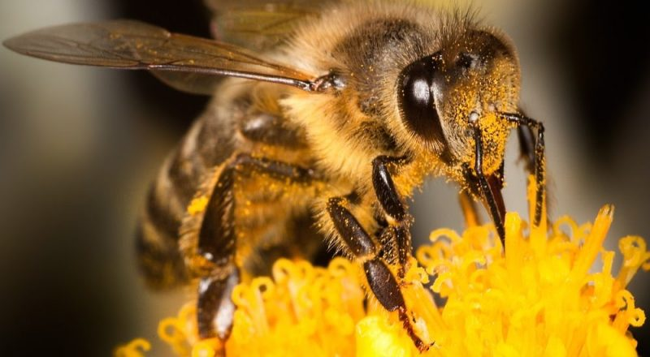
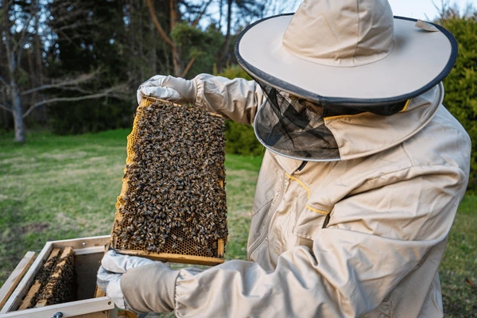

La polinización natural es un proceso esencial para la vida y la producción agrícola, y en el Instituto PAIPPA se la impulsa como una práctica estratégica que une naturaleza, conocimiento y trabajo familiar. A través del vuelo de abejas y otros polinizadores, el polen viaja de flor en flor, permitiendo la formación de frutos, semillas y nuevas plantas, asegurando alimentos más sanos, cultivos más productivos y una mayor biodiversidad. En Formosa, esta práctica fortalece la economía local, ya que mejora el rendimiento de cultivos como frutas, hortalizas, algodón y legumbres, a la vez que promueve el desarrollo de la apicultura como actividad sustentable para los pequeños productores. PAIPPA acompaña este proceso mediante capacitaciones, la instalación de colmenas y el fomento de prácticas respetuosas con el ambiente, demostrando que cuidar a los polinizadores es también cuidar la tierra, la alimentación y el futuro de las familias formoseñas.
 